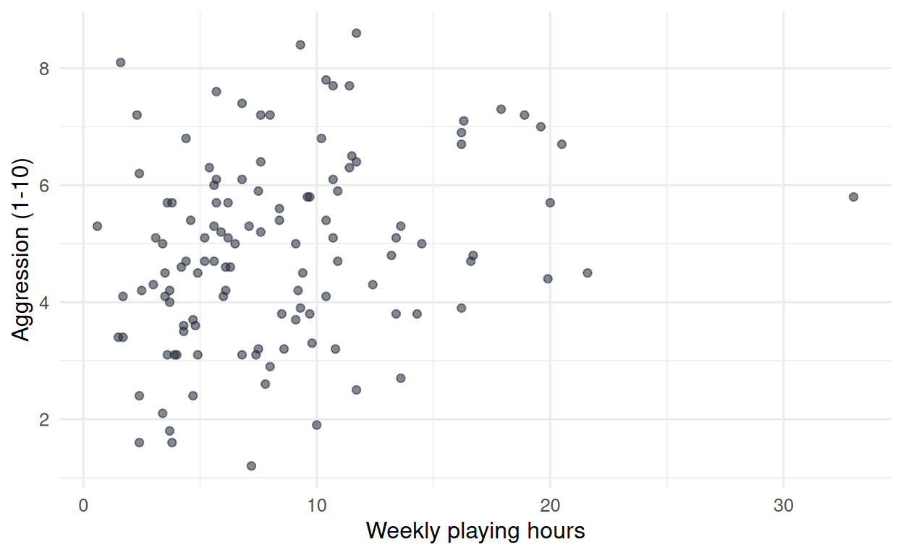
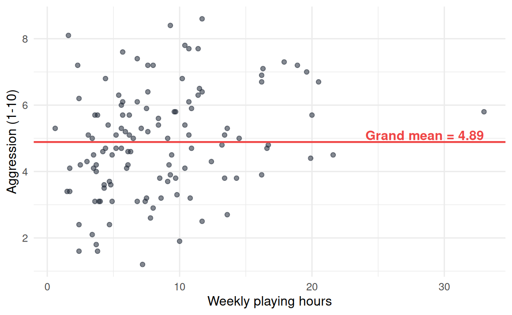
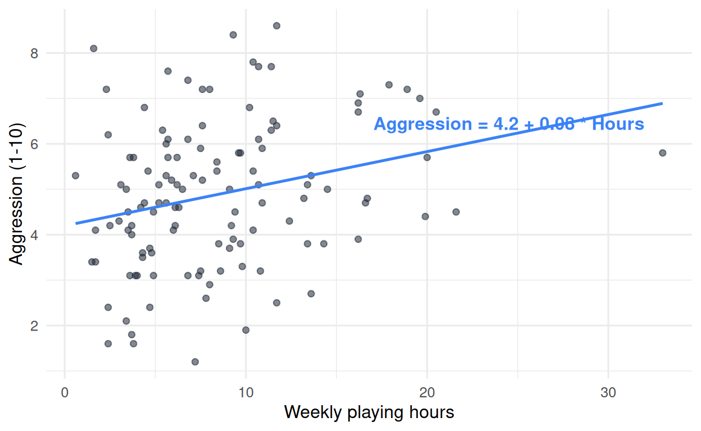
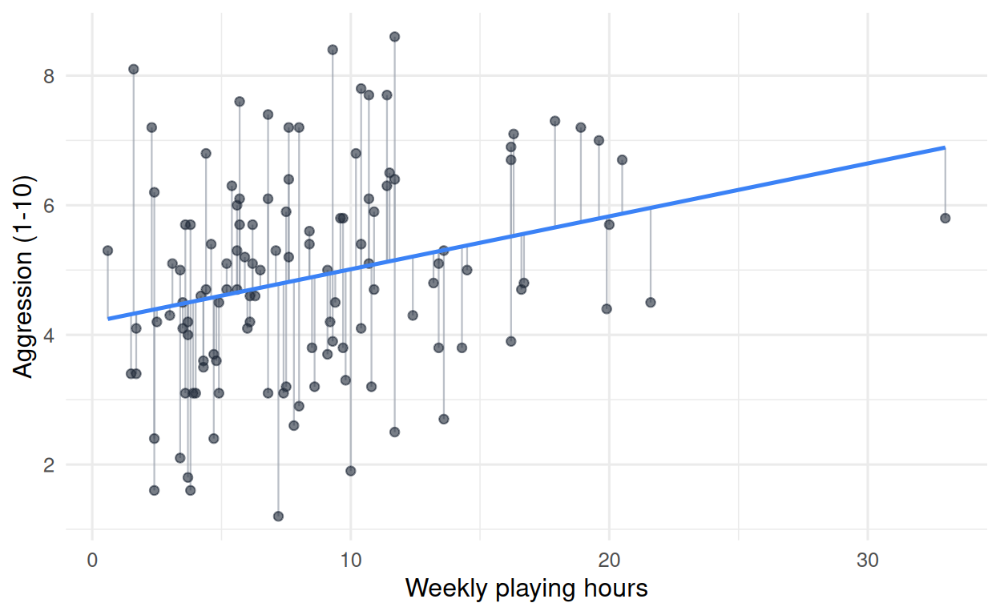
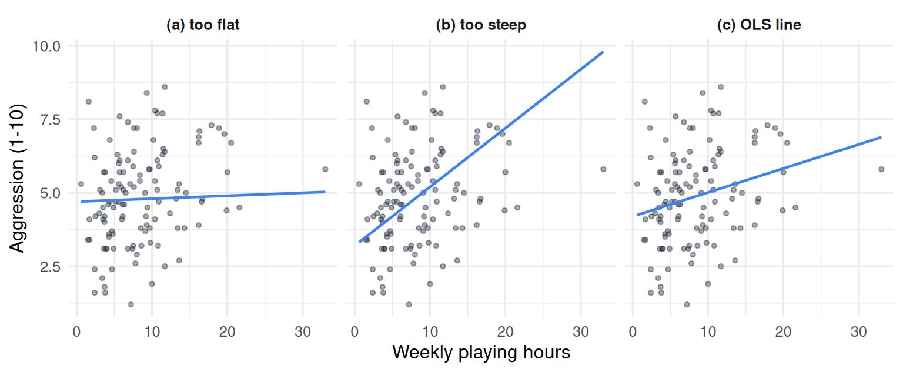
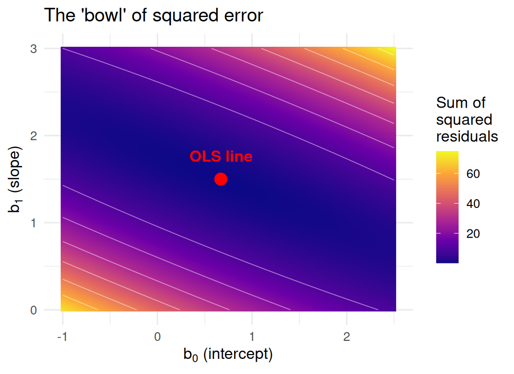

15 From the mean to the line: the simple linear model
15.1 Overview
Chapter 14 fitted two models to a small dataset: the grand-mean model, which makes the same prediction for every observation, and the group-means model, which makes a different prediction for each experimental condition. The two-group model fit better. The reason: it used more information about each participant.
This chapter takes the next step. What if the information we use to make a participant’s prediction is not their group, but the value of a continuous variable measured on them? For example: what if we predict each participant’s aggression score from how many hours per week they play video games?
A model that uses one continuous predictor needs a new mathematical form. We will replace the flat horizontal line (the grand mean) with a sloped line, and we will introduce the two numbers that define such a line. This chapter is conceptual: by the end you will understand what a simple linear model is, what its parameters mean, what counts as a prediction, and what criterion R uses to choose “the best” line. Chapter 16 will then walk through how to fit and interpret the model in R using lm().
15.2 A new question, a new picture
The motivating question for this chapter is one many researchers have asked: do people who play more hours of video games per week tend to report higher aggression?
We have two variables in vgames_study:
- The predictor (which we will call \(X\) from here on):
hours_weekly, how many hours of gaming per week. - The outcome (which we will call \(Y\)):
aggression, the post-experiment aggression score on a 1-10 scale.
The natural picture for one continuous predictor and one continuous outcome is a scatterplot, which you met in Chapter 10. Each participant is one point, positioned by their \(X\) value horizontally and their \(Y\) value vertically.
There is a vague upward trend: participants who play more hours tend to score slightly higher on aggression, on average. But the trend is not tight; there is substantial scatter. Plenty of heavy players have low aggression scores; plenty of light players have high ones. The relationship is real but weak, and the eye alone is not good at quantifying it.
In Chapter 14, our model for aggression was a single number (the grand mean, around 4.89). On this scatterplot, that model is a flat horizontal line:

This is the mean-only model viewed in two dimensions. The line is flat because the prediction does not depend on hours_weekly: every participant is predicted to have aggression 4.89, regardless of how many hours they play. The residual of each participant is the vertical distance from their point to this red line, which is exactly the residual we computed in Chapter 14.
What if we let the prediction depend on hours_weekly?
15.3 The line as a two-number model
The simplest way to let the prediction vary with \(X\) is to tilt the line. Instead of a flat horizontal line at one fixed value, we draw a line that has both a height (where it sits on the y-axis) and a tilt (how much it rises or falls per unit of \(X\)).
This is the equation of a line, which you may recognize from high school mathematics:
\[ Y = b_0 + b_1 X. \]
Two numbers define the line:
- The intercept, \(b_0\), is the value of \(Y\) when \(X\) is zero. It is the height at which the line meets the y-axis.
- The slope, \(b_1\), is the amount \(Y\) changes for each one-unit increase in \(X\). It is the line’s tilt.
For real data, the line will not pass exactly through every point; the points scatter around it. The full simple linear model acknowledges this by adding a residual term, one residual per observation:
\[ Y_i = b_0 + b_1 X_i + \varepsilon_i. \]
The subscript \(i\) indexes each participant. \(Y_i\) is participant \(i\)’s observed outcome; \(X_i\) is participant \(i\)’s predictor value; \(b_0 + b_1 X_i\) is the model’s prediction for that participant (sometimes written \(\hat{Y}_i\)); and \(\varepsilon_i\) is participant \(i\)’s residual, the vertical distance between the point and the line.
When \(b_1\) is zero, the line is flat and the model reduces to the mean-only model from Chapter 14: a single value (\(b_0\)) predicted for everyone, regardless of \(X\). The simple linear model contains the mean-only model as a special case.
15.4 What the slope means
The slope \(b_1\) is the most important number in the model. It captures both the direction and the size of the relationship between \(X\) and \(Y\).
- Positive slope (\(b_1 > 0\)): as \(X\) increases, \(Y\) increases. The line goes up to the right. In our example: more weekly hours of gaming, higher predicted aggression.
- Negative slope (\(b_1 < 0\)): as \(X\) increases, \(Y\) decreases. The line goes down to the right.
- Slope of zero (\(b_1 = 0\)): no relationship; the line is flat (this is the mean-only model).
The size of the slope tells you how strong the predicted change in \(Y\) is for a one-unit increase in \(X\). For our running example, the best-fitting line has \(b_1 \approx 0.08\). The interpretation in plain English:
Each additional hour of weekly gaming is associated with an increase of 0.08 points in aggression.
A few practical points about this interpretation.
The slope is per one-unit change in \(X\). If you want to know what the model predicts for a ten-hour difference, multiply: \(0.08 \times 10 = 0.8\) points. The model says ten more hours of gaming is associated with about eight tenths of a point higher aggression.
The slope is an average over the dataset. It is what the model predicts; it does not mean every participant who plays one more hour scores 0.08 more on aggression. Individual participants vary widely around the line.
The slope is a description, not a cause. Notice the wording: “associated with.” We have a statistical relationship between two variables in a sample. We have not (yet) said that gaming causes aggression. Causal inference is a separate question, with its own logic, and we will return to it in later sections of the book.
15.5 What the intercept means
The intercept \(b_0\) is the predicted value of \(Y\) when \(X = 0\). In our example, the best-fitting line has \(b_0 \approx 4.20\), so a participant who plays zero hours per week is predicted to have an aggression score of 4.20.
The intercept is sometimes a substantively meaningful number, and sometimes it is not. In our case, \(X = 0\) (zero hours of gaming) is a value participants could plausibly take, so the intercept has a real interpretation: it is the model’s prediction for non-gamers. In other studies, \(X = 0\) is outside the range of the data (for example, a study measuring height in adults: \(X = 0\) would mean a height of zero, which is not a meaningful baseline). In those cases the intercept is still mathematically necessary (the line has to start somewhere) but should not be interpreted as a real prediction. We will see techniques for making the intercept meaningful (such as centering predictors) in later chapters.
15.6 A prediction for any value of \(X\)
Once you have \(b_0\) and \(b_1\), the line gives a prediction for any value of \(X\) you care to plug in. You simply evaluate the equation:
\[ \hat{Y} = b_0 + b_1 X. \]
In our example, \(\hat{Y} = 4.20 + 0.08 X\):
- For \(X = 0\) hours: \(\hat{Y} = 4.20 + 0.08 \times 0 = 4.20\).
- For \(X = 5\) hours: \(\hat{Y} = 4.20 + 0.08 \times 5 = 4.60\).
- For \(X = 10\) hours: \(\hat{Y} = 4.20 + 0.08 \times 10 = 5.00\).
- For \(X = 20\) hours: \(\hat{Y} = 4.20 + 0.08 \times 20 = 5.80\).
Every point along the line is a prediction. Unlike the mean-only model (one prediction for everyone), the simple linear model produces a different prediction for each value of the predictor.

The blue line is the simple linear model’s prediction. It is not flat: it tilts upward gently. Two participants with different hours_weekly values receive different predictions, instead of the same one as under the mean-only model.
One caution. Plugging values of \(X\) outside the range of the observed data into the equation is called extrapolation, and you should treat any such prediction with caution. Our data go up to about 30 hours of gaming per week. The model will dutifully produce a prediction for \(X = 100\), but we have no evidence that the linear relationship continues that far. A line that fits well in the observed range can curve in ways we cannot see beyond it.
15.7 Residuals from the line
For each participant, the residual is exactly the same idea as in Chapter 14: observed minus predicted.
\[ \varepsilon_i = Y_i - \hat{Y}_i = Y_i - (b_0 + b_1 X_i). \]
Geometrically, the residual is the vertical distance from each point to the line. Below, the residuals are drawn as grey segments connecting each observation to its prediction on the line:

Participants above the line have positive residuals (they scored higher than the model predicted); participants below the line have negative residuals. Compare this picture to the analogous picture in Chapter 14 (with the grey segments running to the flat grand-mean line). The line tilts in a direction that, on average, makes the grey segments shorter than they were under the mean-only model. That improvement in fit will be quantified by R-squared in the next chapter.
15.8 How is “the best” line chosen?
There are infinitely many candidate lines you could draw through a scatterplot. Some are clearly too steep, some too flat, some pass too low, some too high. We need a precise rule for choosing one of them as “the” line of the model.
The rule is the same one introduced in Chapter 14:
Choose the line that minimizes the sum of squared residuals.
This estimation method is called Ordinary Least Squares, abbreviated OLS. “Least squares” because it chooses the intercept and slope that make the squared distances from the points to the line as small as possible, in total. “Ordinary” because there are more elaborate versions for special situations (we will not need them in this book), and this is the standard one.
Three candidate lines through the same data illustrate the idea. The first is too flat (it does not tilt enough to capture the upward trend). The second is too steep. The third is the OLS line, where the sum of squared vertical distances from the points to the line is as small as it can be.

The OLS line is the unique line that makes the sum of squared vertical distances from the points to the line as small as possible. R does this calculation for you automatically: the function lm() (introduced in the next chapter) takes a dataset and a formula and returns the OLS intercept and slope. You do not need to know the closed-form formulas for \(b_0\) and \(b_1\) to use the model; you need to know what they mean and what criterion produced them.
A worthwhile fact about OLS. The mean-only model from Chapter 14 is itself an OLS estimate: the single number that minimizes the sum of squared residuals from a constant prediction is exactly the mean (this is a theorem from a first calculus course). So the framework in this chapter is not a different framework. It is the same one, applied to a slightly more flexible class of predictions.
15.9 Going under the hood: how the line is actually computed
A reader paying close attention might ask: if OLS picks the line with the smallest sum of squared residuals, does R try out lots of candidate lines until it finds the one with the smallest SS?
The answer is no. Nobody, including R, finds the line by searching through possibilities. The OLS line can be calculated directly, in one step, from a short formula. The visual intuition we just built (try many lines and pick the best) is the right idea, but it is not the actual procedure. Both by hand (before computers) and inside R, the line is computed, not searched.
15.9.1 The formula, by hand
Before computers, statisticians computed the OLS slope and intercept with two short formulas. They are worth seeing once.
The slope is
\[ b_1 = \frac{\sum_{i=1}^{n} (x_i - \bar{x})(y_i - \bar{y})}{\sum_{i=1}^{n} (x_i - \bar{x})^2}. \]
In words: it is the sum of the products of each observation’s deviations from its respective means, divided by the sum of the squared deviations of \(x\) from its mean. The numerator measures how \(x\) and \(y\) move together; the denominator measures how much \(x\) varies on its own.
The intercept is then
\[ b_0 = \bar{y} - b_1 \bar{x}. \]
This equation says: the OLS line always passes through the point \((\bar{x}, \bar{y})\), the center of the data. Once you know the slope, the intercept is whatever value puts the line through that center point.
15.9.2 A worked example with three students
To make the formulas concrete, suppose we have three students with the following data on hours studied (\(X\)) and test score (\(Y\)):
| Student | Hours studied (\(x\)) | Test score (\(y\)) |
|---|---|---|
| 1 | 1 | 2 |
| 2 | 2 | 4 |
| 3 | 3 | 5 |
Step 1: compute the means.
\[\bar{x} = (1 + 2 + 3) / 3 = 2 \qquad \bar{y} = (2 + 4 + 5) / 3 \approx 3.67\]
Step 2: build a deviation table. For each student, compute the deviations from the means, their product, and the squared deviation of \(x\).
| Student | \(x\) | \(y\) | \(x - \bar{x}\) | \(y - \bar{y}\) | \((x - \bar{x})(y - \bar{y})\) | \((x - \bar{x})^2\) |
|---|---|---|---|---|---|---|
| 1 | 1 | 2 | −1 | −1.67 | 1.67 | 1 |
| 2 | 2 | 4 | 0 | 0.33 | 0 | 0 |
| 3 | 3 | 5 | 1 | 1.33 | 1.33 | 1 |
| Sum | 3.00 | 2.00 |
Step 3: plug into the formulas.
\[ b_1 = \frac{3.00}{2.00} = 1.5 \qquad b_0 = 3.67 - 1.5 \times 2 = 0.67. \]
The best-fitting line is \(\hat{y} = 0.67 + 1.5x\). Each additional hour studied is associated with a predicted increase of 1.5 points in test score. No search, no trial and error: two sums, one division, one subtraction.
15.9.3 Why a formula exists at all: the bowl
The reason a closed-form formula exists is geometric. Imagine plotting the sum of squared residuals as a function of the two parameters \(b_0\) and \(b_1\): every choice of intercept and slope gives one value of the SS. The resulting surface (one SS value for each combination of intercept and slope) is a smooth bowl with a single lowest point.

The picture above plots the SS for the three-student dataset across a range of intercept and slope values. Each colored point represents one candidate line; the SS value of the line is shown by color. The red dot marks the unique combination \((b_0 = 0.67, b_1 = 1.5)\) that gives the smallest SS. The bowl has a single bottom, smooth on all sides, which is why a formula can find it directly rather than having to search.
15.9.4 What R does with several predictors
The slope-and-intercept formulas above work for the case of one predictor. With several predictors at once (a topic of Chapter 17), there are more coefficients to estimate, and the formulas generalize. R uses a piece of matrix algebra called QR decomposition that solves for all the coefficients in a single calculation, regardless of how many predictors you have. You will not need to know how QR decomposition works to use the model; what matters at this point is that R is calculating an exact answer, not searching for one.
15.9.5 Three ways of thinking about the same answer
| Level | Description | Where it lives |
|---|---|---|
| Visual intuition | “Try many lines; pick the one with the smallest sum of squared residuals.” | The mental picture you use to understand OLS. |
| By hand | Compute \(b_1 = \sum(x_i - \bar{x})(y_i - \bar{y}) / \sum(x_i - \bar{x})^2\), then \(b_0 = \bar{y} - b_1 \bar{x}\). | What people did before computers. Works for one predictor. |
| By computer | R uses QR decomposition to solve for all coefficients at once. | What lm() actually does in Chapter 16, no matter how many predictors. |
All three descriptions produce the same OLS line. The first is the mental model. The second is the calculation you could do on paper. The third is what R does under the hood when you call lm() in the next chapter.
15.10 Looking ahead
We now have a richer model than the mean: the simple linear model, with two parameters (\(b_0\) and \(b_1\)) and the OLS criterion for choosing them. We have spent this chapter on what the model is, how to read its parameters, and how to think about its predictions and residuals. We have not yet computed any of these quantities in R. That is the topic of the next chapter.
Chapter 16 will:
- introduce the
lm()function and the formula syntaxY ~ X, - show how to read the
summary()output (focusing on the coefficients, which are \(b_0\) and \(b_1\)), - introduce R-squared as the formal measure of how much better the line is than the mean,
- show that correlation (which you may have heard of) is a special case of simple regression,
- and walk through a small worked example so you can read regression output yourself.
By the end of Chapter 16 you will be fitting and interpreting your first regression models.
15.11 Check your understanding
1. What is a simple linear model?
2. What does the intercept (\(b_0\)) of a simple linear model represent?
3. What does the slope (\(b_1\)) of a simple linear model represent?
4. What happens when you plug a value of \(X\) into the model equation \(\\hat{Y} = b_0 + b_1 X\)?
5. How does Ordinary Least Squares (OLS) choose the best-fitting line?
6. The mean-only model is a special case of the simple linear model. Which value of the slope makes them equivalent?
7. What is “extrapolation,” and why is it a concern in simple regression?
8. Suppose your simple linear model has a slope of \(b_1 = 0.5\), meaning each unit increase in \(X\) is associated with a 0.5-unit increase in \(Y\). Can you conclude from this slope alone that \(X\) causes \(Y\)?
15.12 References
Navarro, D. J. (2018). Learning statistics with R: A tutorial for psychology students and other beginners (Version 0.6), Chapter 15. https://learningstatisticswithr.com